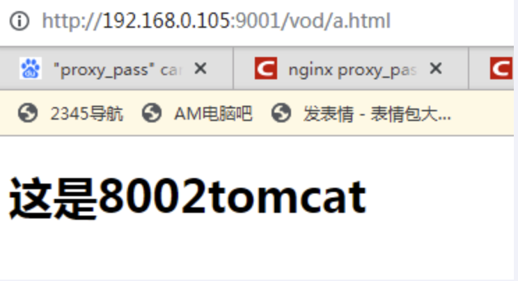

Nginx 学习记录
Nginx概述
概述
Nginx（“engine x”）是一个高性能的 HTTP /反向代理的服务器及电子邮件（IMAP/POP3)代理服务器。官方测试nginx能够支撑5万并发，并且cpu，内存等资源消耗却非常低，运行非常稳定。最重要的是开源，免费，可商用的。
Nginx还支持热部署，几乎可以做到7 * 24 小时不间断运行，即时运行数个月也不需要重启，还能够在不间断服务的情况下对软件进行升级维护。
Nginx应用场景
正向代理
正向代理 ：一般的访问流程是客户端直接向目标服务器发送请求并获取内容，使用正向代理后，客户端通过配置或其他方式改为向代理服务器发送请求，并指定目标服务器（原始服务器），然后由代理服务器和原始服务器通信，转交请求并获得的内容，再返回给客户端。正向代理隐藏了真实的客户端，为客户端收发请求，使真实客户端对服务器不可见；
反向代理
**反向代理：**正好相反。对于客户端来说，反向代理就好像目标服务器。并且客户端不需要进行任何设置。客户端向反向代理发送请求，接着反向代理判断请求走向何处，并将请求转交给客户端，使得这些内容就好像它自己的一样，一次客户端并会并会不感知到反向代理后面的服务，因此不需要客户端做任何设置，只需要把反向代理服务器当成真正的服务器就好了。
负载均衡
负载均衡建立在现有网络结构之上，它提供一种链家有效透明的方法扩展网络设备和服务器的宽带、增加吞吐量，加强网络数据处理能力，提高网络的灵活性和可用性。
动静分离
为了加快网站的解析速度，可以把动态页面和静态页面由不同的服务器来解析，加快解析速度，降低原来单个服务器的压力。一般来说，都需要将动态资源和静态资源分开，由于Nginx的高并发和静态资源缓存等特性，经常将静态资源部署在Nginx上。如果请求的是静态资源，直接到静态资源目录获取资源，如果是童泰资源的请求，则利用反向代理的原理，把请求转发给对应后台应用去处理，从而实现动静分离。
Nginx安装
安装相关依赖
第一步
1、 安装pcre
1 wget http://downloads.sourceforge.net/project/pcre/pcre/8.37/pcre-8.37.tar.gz
2、解压文件 tar -zxvf 路径
3、pcre主目录执行命令 :
可能遇到的情况：没有c++支持
安装c++支持：
1 yum install -y gcc gcc-c++
4、完成后、回到pcre目录下执行
5、查看版本 :
第二步，安装其他依赖
zlib openssl
1 yum -y install make zlib zlib-devel gcc-c++ libtool openssl openssl-devel
安装nginx
解压nginx-xx.tar.gz包
1 tar -zxvf nginx-xxx.tar.gz
进入解压目录，执行./configure
make&&make install
开放端口
1 2 3 4 5 6 7 firewall-cmd --list-all firewall-cmd --add-service=http –permanent sudo firewall-cmd --add-port=80/tcp --permanent firewall-cmd –reload
2.4 访问
nginx常用命令和配置文件
常用命令
1 2 3 4 5 6 7 8 9 10 11 在/usr/local /nginx/sbin 目录下执行 ./nginx -v 在/usr/local /nginx/sbin 目录下执行 ./nginx 在/usr/local /nginx/sbin 目录下执行 ./nginx -s stop 在/usr/local /nginx/sbin 目录下执行 ./nginx -s reload
配置文件详细讲解
1 2 位置：/usr/local /nginx/conf/nginx.conf
1 2 3 4 5 6 7 8 9 10 11 12 13 14 15 16 17 18 19 20 21 22 23 24 25 26 27 28 29 30 31 32 33 34 35 36 37 38 39 40 41 42 43 44 45 46 47 48 49 50 51 52 53 54 55 56 57 58 59 60 61 62 63 64 65 66 67 68 69 70 71 72 73 74 75 76 77 78 79 80 81 82 83 84 85 86 87 88 89 90 91 92 93 94 95 96 97 98 99 100 101 102 103 104 105 106 107 108 109 110 111 112 113 114 115 116 117 118 119 120 121 122 123 124 125 126 127 128 129 130 131 132 133 134 135 136 137 138 139 140 141 142 143 144 145 146 147 148 149 150 151 152 153 154 155 156 157 158 159 160 161 162 163 164 165 166 167 168 169 170 171 172 173 174 175 176 177 178 179 180 181 182 183 184 185 186 187 188 189 190 191 192 193 194 195 196 197 198 199 200 201 202 203 204 205 206 207 208 209 210 211 212 213 214 215 216 217 218 219 220 221 222 223 224 225 226 227 228 229 230 231 232 233 234 235 236 237 238 239 240 241 242 243 244 245 246 247 248 249 250 251 252 253 254 255 256 257 258 259 260 261 262 263 264 265 266 267 268 269 270 271 272 273 274 275 276 277 278 279 280 281 282 283 284 285 286 287 288 289 290 291 292 293 294 295 296 297 298 299 300 301 302 303 304 305 306 307 308 309 310 311 312 313 314 315 316 317 318 319 320 321 322 323 324 325 326 327 328 329 330 331 332 user www www; worker_processes 8; error_log /usr/local /nginx/logs/error.log info; pid /usr/local /nginx/logs/nginx.pid; worker_rlimit_nofile 65535; events { use epoll; worker_connections 65535; keepalive_timeout 60; client_header_buffer_size 4k; open_file_cache max=65535 inactive=60s; open_file_cache_valid 80s; open_file_cache_min_uses 1; open_file_cache_errors on; } http { include mime.types; default_type application/octet-stream; server_names_hash_bucket_size 128; client_header_buffer_size 32k; large_client_header_buffers 4 64k; client_max_body_size 8m; sendfile on; autoindex on; tcp_nopush on; tcp_nodelay on; keepalive_timeout 120; fastcgi_connect_timeout 300; fastcgi_send_timeout 300; fastcgi_read_timeout 300; fastcgi_buffer_size 64k; fastcgi_buffers 4 64k; fastcgi_busy_buffers_size 128k; fastcgi_temp_file_write_size 128k; gzip on; gzip_min_length 1k; gzip_buffers 4 16k; gzip_http_version 1.0; gzip_comp_level 2; gzip_types text/plain application/x-javascript text/css application/xml; gzip_vary on; upstream jh.w3cschool.cn { server 192.168.80.121:80 weight=3; server 192.168.80.122:80 weight=2; server 192.168.80.123:80 weight=3; } server { listen 80; server_name www.w3cschool.cn w3cschool.cn; index index.html index.htm index.php; root /data/www/w3cschool; location ~ .*.(php|php5)?$ { fastcgi_pass 127.0.0.1:9000; fastcgi_index index.php; include fastcgi.conf; } location ~ .*.(gif|jpg|jpeg|png|bmp|swf)$ { expires 10d; } location ~ .*.(js|css)?$ { expires 1h; } log_format access '$remote_addr - $remote_user [$time_local] "$request" ' '$status $body_bytes_sent "$http_referer" ' '"$http_user_agent" $http_x_forwarded_for' ; access_log /usr/local /nginx/logs/host.access.log main; access_log /usr/local /nginx/logs/host.access.404.log log404; location / { proxy_pass http://127.0.0.1:88; proxy_redirect off; proxy_set_header X-Real-IP $remote_addr ; proxy_set_header X-Forwarded-For $proxy_add_x_forwarded_for ; proxy_set_header Host $host ; client_max_body_size 10m; client_body_buffer_size 128k; proxy_intercept_errors on; proxy_connect_timeout 90; proxy_send_timeout 90; proxy_read_timeout 90; proxy_buffer_size 4k; proxy_buffers 4 32k; proxy_busy_buffers_size 64k; proxy_temp_file_write_size 64k; } location /NginxStatus { stub_status on; access_log on; auth_basic "NginxStatus" ; auth_basic_user_file confpasswd; } location ~ .(jsp|jspx|do )?$ { proxy_set_header Host $host ; proxy_set_header X-Real-IP $remote_addr ; proxy_set_header X-Forwarded-For $proxy_add_x_forwarded_for ; proxy_pass http://127.0.0.1:8080; } location ~ .*.(htm|html|gif|jpg|jpeg|png|bmp|swf|ioc|rar|zip|txt|flv|mid|doc|ppt| pdf|xls|mp3|wma)$ { expires 15d; } location ~ .*.(js|css)?$ { expires 1h; } } }
反向代理
单端口反向代理
实现效果：打开浏览器，在浏览器地址栏输入 www.123.com ，跳转到 linux 系统的 tomcat 主页
安装 tomcat
将Tomcat安装包复制到linux中
进入 tomcat 的 bin 目录中，./startup.sh 启动 tomcat 服务器
对外开放访问的端口号
1 2 firewall-cmd --add-port=8080/tcp --permanent firewall-cmd -reload
修改本机端口映射
1 2 增加：192.168.0.105 www.123.com
修改nginx配置文件
访问测试
多端口反向代理
实现效果：
1 2 访问 http://192.168.0.105:9001/edu/ 直接跳转到 127.0.0.1:8080 访问 http://192.168.0.105:9001/vod/ 直接跳转到 127.0.0.1:8081
安装两个 Tomcat 分别定义端口为 8001,8002
创建文件夹和测试页面
配置 nginx配置文件
开放端口号
1 2 3 4 5 6 7 firewall-cmd --add-port=8001/tcp --permanent firewall-cmd --add-port=8002/tcp --permanent firewall-cmd --add-port=9001/tcp --permanent firewall-cmd --reload
测试
1、访问：http://192.168.0.105:9001/edu/a.html
2、访问：http:// 192.168.0.105:9001/vod/a.html

负载均衡
1、准备两台 tomcat 服务器，一台8001，一台8002
2、 在两台 tomcat 里面 webapps 目录中，创建名称是 edu 文件夹，在 edu 文件夹中创建页面a.html，用于测试
3、配置nginx配置文件
1 2 3 4 5 6 7 8 9 10 11 12 13 14 upstream myserver{ server 192.168.0.105:8001 weight=1; server 192.168.0.105:8002 weight=2; } listen 80; server_name 192.168.0.105; location / { proxy_pass http://myserver; root html; index index.html index.htm; }
4、nginx提供了几种分配方式(策略)
1 2 3 4 5 6 7 8 9 10 11 12 13 14 15 16 17 18 19 20 21 22 23 24 每个请求按时间顺序逐一分配到不同的后端服务器，如果后端服务器 down 掉，能自动剔除。 weight 代表权重，默认是1，权重越高被分配的客户端越多。 指定轮询几率，weight和访问比率成正比，用于后端服务器性能不均的情况。例如： upstream server_pool{ server 192.168.5.21 weight=10; server 192.168.5.22 weight=10; } 每个请求按访问 ip 的 hash 结果分配，这样每个访客固定一个后端服务器，可以解决session的问题。例如： upstream server_pool{ ip_hash server 192.168.5.21:80; server 192.168.5.22:80; } 按后端服务器的响应时间来分配请求，响应时间短的优先分配。 upstream server_pool{ server 192.168.5.21:80; server 192.168.5.22:80; fair; }
5、测试
动静分离
什么是动静分离
Nginx 动静分离简单来说就是把动态跟静态请求分开，不能理解成只是单纯的把动态页面和
静态页面物理分离。
在linux系统中准备静态资源，用于进行访问
nginx配置文件
测试
高可用
Keeplived+Nginx高可用集群（主从模式）
1、需要两台服务器 192.168.0.105 和 192.168.0.102
2、在两台服务器上安装nginx和keeplived
#1.安装keepalived
105主服务器
102副服务器
#4. 启动keepalived
#5.测试
Keeplived+Nginx 高可用集群（双主模式）
修改配置
（2） 配置 LB-02 节点
如果您喜欢此博客或发现它对您有用，则欢迎对此发表评论。 也欢迎您共享此博客，以便更多人可以参与。 如果博客中使用的图像侵犯了您的版权，请与作者联系以将其删除。 谢谢 ！